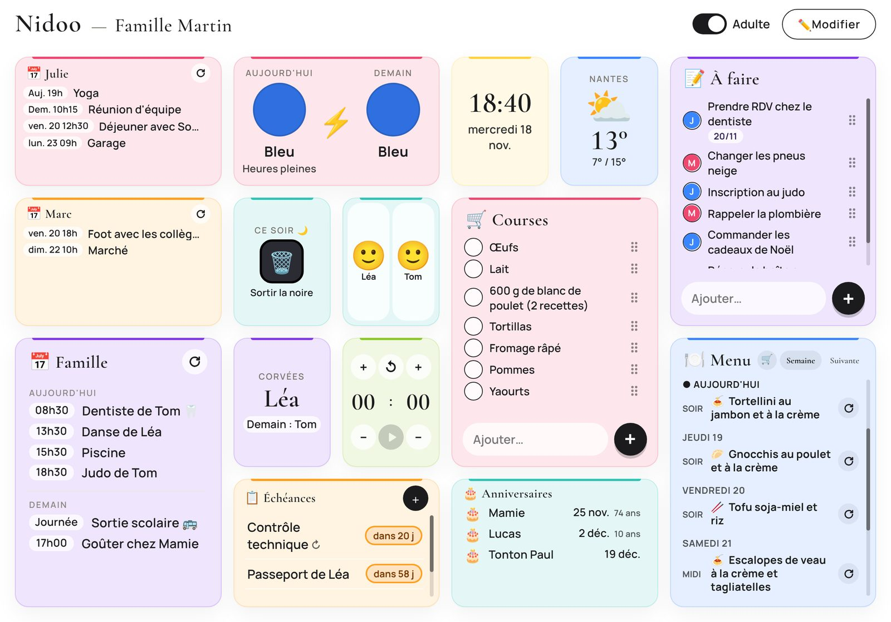

Lisible d'un coup d'œil
Gros chiffres, couleurs franches, emojis : même un enfant qui ne lit pas encore bien sait ce qui l'attend ce soir.
Nidoo transforme une tablette posée dans la cuisine ou fixée au mur en tableau de bord de la famille : agendas, courses, menu de la semaine, routine des enfants, météo, poubelles à sortir… Chacun choisit ses widgets et les range où il veut, comme les applications d'un iPad.
100 % gratuit pour l'instant. Profitez-en : certains widgets pourraient devenir payants plus tard.


Les informations de la famille sont éparpillées entre des agendas, des groupes de discussion et des post-it. Nidoo les rassemble là où tout le monde passe, sans téléphone à déverrouiller.
Gros chiffres, couleurs franches, emojis : même un enfant qui ne lit pas encore bien sait ce qui l'attend ce soir.
On ajoute seulement les widgets utiles, on les glisse où on veut, on choisit leur taille et leur couleur. Rien d'imposé.
Pas d'inscription, pas d'e-mail, pas de publicité. Vos données restent sur vos appareils, sauf si vous choisissez de les relier.
Un interrupteur en haut de l'écran fait passer de la version colorée pour les enfants à une version sobre et élégante pour les adultes. Chaque côté a sa propre grille de widgets : les enfants voient leur routine et leurs étoiles, les parents leurs échéances et leurs rendez-vous.
Voir les deux écrans en haut de page
Les deux grilles sont indépendantes. Mais une liste (les courses, par exemple) ou les échéances peuvent être les mêmes des deux côtés : en ajoutant le widget, on choisit « une liste qui existe déjà ». Ce que l'un coche ou ajoute apparaît aussitôt chez l'autre. Et le bouton « Copier la grille » crée en un geste le côté parents à partir du côté enfant (ou l'inverse).
Chaque widget se règle avec sa roue ⚙️ et existe en plusieurs tailles, d'une case (1×1) jusqu'à toute la hauteur de l'écran (4×2). Les données viennent de services publics et gratuits (Open-Meteo pour la météo, EDF Tempo, prix des carburants publiés par l'État…).
Sur la tablette, ouvrez nidoo.latanieregeek.com dans Safari ou Chrome. Pas de compte à créer.
Touchez « Modifier », puis « + Ajouter ». Glissez chaque widget à sa place ; la roue ⚙️ règle sa taille et son contenu.
Sur iPad : Partager, puis « Sur l'écran d'accueil ». Sur Android : menu ⋮, puis « Ajouter à l'écran d'accueil ». Nidoo s'ouvre alors en plein écran.
« Modifier », ⚙️ « Appareil », « Afficher un code » : tapez ce code sur un téléphone ou une autre tablette, et tout reste synchronisé.
Un code de 4 caractères, valable 10 minutes, relie la tablette du salon aux téléphones des parents. Une liste cochée dans le magasin est à jour sur le mur en une vingtaine de secondes.
4T2B
Aux heures choisies, l'écran devient noir avec juste l'heure, et les widgets se mettent en pause. Un toucher le rallume deux minutes.
Tout est enregistré dans le navigateur de l'appareil. Si vous reliez plusieurs appareils, la grille est aussi gardée sur le serveur de Nidoo, accessible uniquement avec la clé secrète de votre famille.
Sur un petit écran, les widgets s'affichent simplement l'un sous l'autre : pratique pour cocher les courses ou vérifier l'agenda en déplacement.
Non. On ouvre Nidoo dans le navigateur et on commence. Pas d'adresse e-mail, pas de mot de passe.
Oui : pour l'instant, tout est 100 % gratuit et sans publicité. Certains widgets pourraient devenir payants plus tard, c'est donc le bon moment pour en profiter. Seul le widget Trafic demande une clé TomTom, elle aussi gratuite.
Dans le navigateur de l'appareil. Si vous reliez plusieurs appareils, la grille est aussi enregistrée sur le serveur de Nidoo, dans un fichier accessible uniquement avec la clé secrète de votre famille, pour que les appareils se synchronisent.
Sur tout appareil avec un navigateur récent : iPad, tablette Android, ordinateur. Sur téléphone, les widgets s'affichent l'un sous l'autre.
Sur un appareil, « Modifier », puis ⚙️ « Appareil », puis « Afficher un code » : un code de 4 caractères valable 10 minutes. On le tape sur l'autre appareil, et les deux restent synchronisés.
Oui, en collant l'adresse iCal de l'agenda dans les réglages du widget Agenda. Pour Google Agenda : Paramètres, l'agenda, « Intégrer l'agenda », « Adresse secrète au format iCal ».
Non, chaque côté a sa propre grille. Mais une Liste ou des Échéances peuvent être partagées : en ajoutant le widget, on choisit une liste qui existe déjà de l'autre côté, et le contenu est le même des deux côtés.
On peut indiquer des aliments ou régimes à éviter (porc, poisson, végétarien, sans gluten, sans lactose…). Pour une allergie grave, vérifiez toujours les ingrédients réellement utilisés.
Ouvrez Nidoo sur la tablette de la maison, ajoutez trois widgets, et voyez si la question « c'est quand déjà ? » disparaît. Aujourd'hui, tous les widgets sont gratuits : profitez-en avant que certains ne deviennent payants.